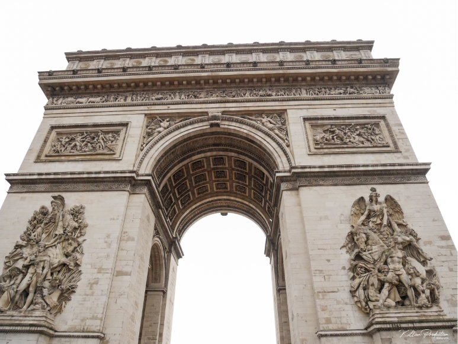

Les 5 destinations incontournables en France
Découvrez les merveilles de la France avec notre sélection de destinations incontournables ! Les Pyrénées vous offrent des vues à couper le souffle avec des sommets majestueux, des lacs cristallins et des vallées verdoyantes. La Bretagne, riche de son histoire et de sa culture, vous charmera avec ses villes médiévales, ses côtes rocheuses et ses villages pittoresques.
Venez découvrir la ville lumière, Paris, avec ses musées renommés, ses monuments emblématiques et ses rues pavées pleines de charme. Enfin, l'Isère, avec ses stations de ski populaires comme Chamrousse, est la destination idéale pour les amateurs de sports d'hiver et de plein air.
Notre sélection de destinations incontournables vous promet des expériences uniques en France, que vous soyez un passionné d'histoire, un amoureux de la nature, un fin gourmet ou un sportif avide de sensations fortes. Réservez dès maintenant votre prochaine escapade en France avec nous !
 |
 |
 |
 |
 |
Les pyrénées |
Le Grau du Roi |
La Bretagne |
Paris |
Chamrousse |